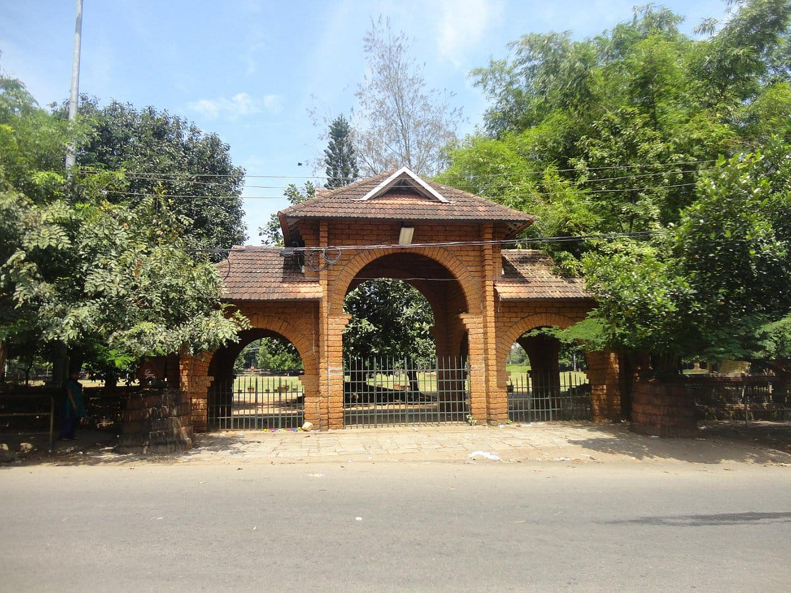
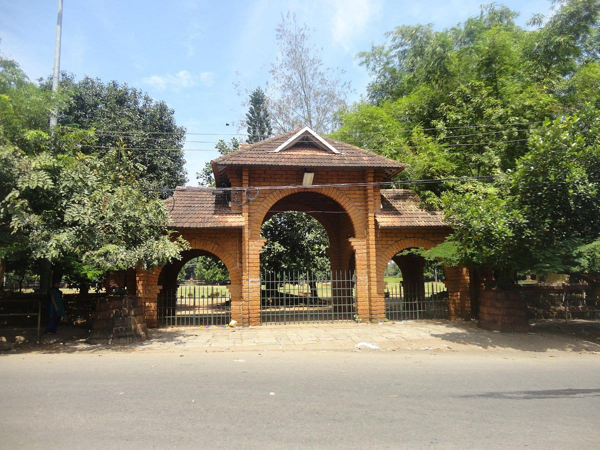

'Mananchira Square'
Mananchira Square, located in the heart of Kozhikode (Calicut), Kerala, is a prominent cultural and historical landmark that beautifully blends the city's rich heritage with modern recreational spaces. This vibrant public square, centered around the picturesque Mananchira Lake, offers a tranquil retreat amidst the bustling urban environment and serves as a hub for social and cultural activities.A park area around a body of water in central Kozhikode. The man-made tank (chira) exists since the 14th century and is named after the then Zamorin ruler Mana.
Opening Hours:
Sunday to Saturday:3:30 pm - 8:00 pm
Entry Fee:None
 


'Sarovaram Biopark'
The government owned bio park is for the conservation of wetlands. It is ideal for families and friends living in Kozhikode. A pedal boating is available here.Sarovaram Bio Park is an eco-friendly development near Kottooly in Kozhikode city in India. The park is situated adjacent to Canoly Canal.Sarovaram Biopark is renowned for its scenic landscapes, featuring a diverse range of habitats, including wetlands, mangroves, and bamboo groves. It is the only Eco-friendly park in Kerala. The government owned bio park is for the conservation of wetlands.
Opening Hours:
Sunday to Saturday: 09:00 am – 6:20 pm
Entry Fee:30 Rs
'Regional Science Centre & Planetarium'
"The Regional Science Centre and Planetarium, Calicut—one of the most visited places in Calicut and one of the most active science centres under the umbrella of the National Council of Science Museums, Ministry of Culture, Government of India —is home to more than 15,000 square feet of hands-on exhibits designed to spark scientific inquiry and creativity. This place presents a plethora of facilities to delight all people of all age by its diversity of themes. We regularly hold indoor and outdoor events related to science - each one more fascinating than the last one. Visit the center and come out with an enhanced understanding of our world - terrestrial and beyond".The planetarium has been instrumental in imparting knowledge about various matters related to the universe, planets and our solar system.The planetarium has been instrumental in imparting knowledge about various matters related to the universe, planets and our solar system.
Opening Hours:
Sunday to Saturday: 10:00 am – 06:30 pm
Entry Fee:80 Rs
'Gandhi Park'
"Gandhi Park offers a wealth of natural beauty and recreational opportunities.Discover tranquility at Gandhi Park, a lush green escape in Kozhikode perfect for relaxation and family fun amidst nature.Gandhi Park is a tranquil oasis located in the vibrant city of Kozhikode, Kerala. This well-maintained park is perfect for those looking to escape the hustle and bustle of city life. Visitors are greeted by sprawling lawns, colorful flower beds, and towering trees that provide a lush backdrop for relaxation and leisure activities. The park is a favorite among families, joggers, and nature enthusiasts alike, making it a popular spot to unwind.
Opening Hours:
Sunday to Saturday: 09:00 am – 06:00 pm
Entry Fee:None

'Malabar Botanical Garden & Institute For Plant Sciences'
"The Malabar Botanical Garden and Institute for Plant Sciences (MBGIPS) is a premier research and conservation center located in Kozhikode, Kerala, India. It focuses on the conservation of aquatic plants and the promotion of research in plant sciences, with a particular emphasis on the biodiversity of the Western Ghats, a UNESCO World Heritage Site and one of the world’s eight "hottest hotspots" of biological diversity.MBGIPS is renowned for its extensive collection of aquatic plants, including rare and endemic species. It serves as a center of excellence for the study and conservation of aquatic plant ecosystems. The institute conducts advanced research in plant sciences, including taxonomy, conservation biology, and biotechnology. It collaborates with universities, research organizations, and conservation agencies to support ecological sustainability.Spread across 40 hectares, the garden offers a tranquil environment, featuring curated collections of orchids, medicinal plants, bamboo species, and various other plant groups. Its picturesque settings make it a popular destination for nature enthusiasts.
Opening Hours:
Sunday to Saturday: 10:00 am – 05:00 pm
Entry Fee:50 Rs